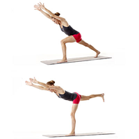

ေျခတံ သြယ္လ် လွပေအာင္

မတ္တပ္ရပ္ပါ။
ညာေျခကို ေနာက္ပို႔ျပီး ကိုယ္ကို ေရွ႕သို႔ ကိုင္းပါ။
ဘယ္ဒူးကုိ ေကြးျပီး လက္ႏွစ္ဘက္လံုးကို ပံုပါ အတိုင္းေျမွာက္ပါ။
ကိုယ္ကို အေရွ႕ကို ကိုင္းျပီး ညာေျခေထာက္ကို အေပၚ ေျမွာက္ပါ။
ေျခေထာက္ ႏွစ္ဘက္လံုးကို ေျဖာင့္ႏိုင္သမွ် ေျဖာင့္ထားပါ။
မိနစ္ ဝက္ခန္႔ ၾကာမွ ညာေျခကို ေအာက္ခ်ပါ။
ဘယ္ေျခကိုလဲ ထိုနည္းအတိုင္း ေျမွာက္ပါ။
တစ္ေန႔ကို ၄-၅ ခါေလာက္ဆို ရပါျပီ။